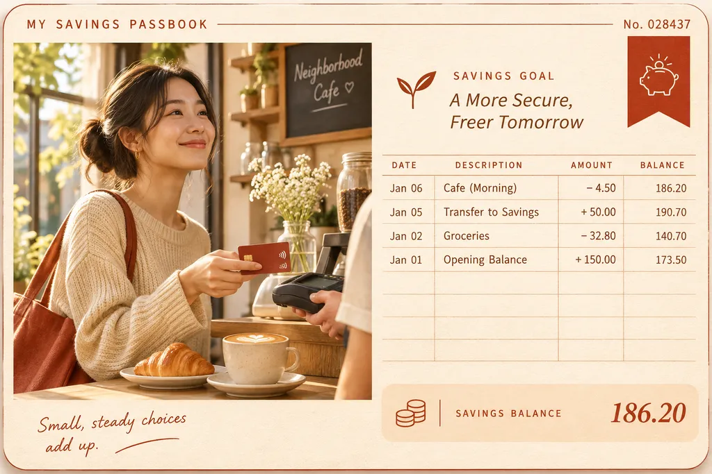

Nestpoints Perks
Nestpoints partners with the places you already spend — restaurants, gyms, and rides — so your everyday habits quietly build your down payment. Every dollar earns points. Every point lands in your home fund.

Perks & Partners
No new cards to juggle, no spreadsheets to babysit. Here's the whole loop.
Pay with your linked card at any Nestpoints partner — dinner, a spin class, a Lyft home.
Points post to your ledger within 24 hours. 3 points per dollar at restaurants, 2 at gyms and studios, 1 on every ride.
Points convert to savings dollars at 100 points = $1, deposited straight into your Money Tracker streak.
Open your Money TrackerExample
$60 dinner = 180 points = $1.80 toward your down payment.